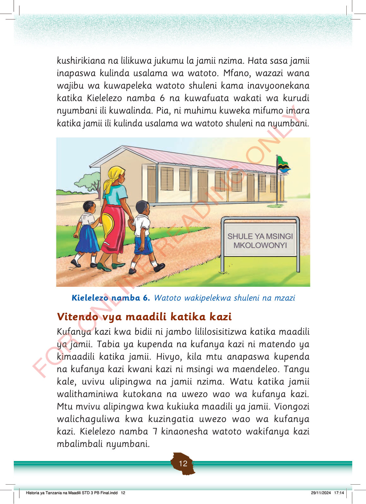

kushirikiana na lilikuwa jukumu la jamii nzima.
Hata sasa jamii inapaswa kulinda usalama wa watoto.
Mfano, wazazi wana wajibu wa kuwapeleka watoto shuleni kama inavyoonekana katika Kielelezo namba 6 na kuwafuata wakati wa kurudi nyumbani ili kuwalinda.
Pia, ni muhimu kuweka mifumo imara katika jamii ili kulinda usalama wa watoto shuleni na nyumbani.
Mzazi anawapeleka watoto wawili shule ya msingi. Mbele kuna kibao cha Shule ya Msingi Mkolowonyi na jengo la shule nyuma.
Kielelezo namba 6.
Watoto wakipelekwa shuleni na mzazi
Vitendo vya maadili katika kazi
Kufanya kazi kwa bidii ni jambo lililosisitizwa katika maadili ya jamii.
Tabia ya kupenda na kufanya kazi ni matendo ya kimaadili katika jamii.
Hivyo, kila mtu anapaswa kupenda na kufanya kazi kwani kazi ni msingi wa maendeleo.
Tangu kale, uvivu ulipingwa na jamii nzima.
Watu katika jamii walithaminiwa kutokana na uwezo wao wa kufanya kazi.
Mtu mvivu alipingwa kwa kukiuka maadili ya jamii.
Viongozi walichaguliwa kwa kuzingatia uwezo wao wa kufanya kazi.
Kielelezo namba 7 kinaonesha watoto wakifanya kazi mbalimbali nyumbani.
Historia ya Tanzania na Maadili STD 3 PB Final.indd 12
29/11/2024 17:14